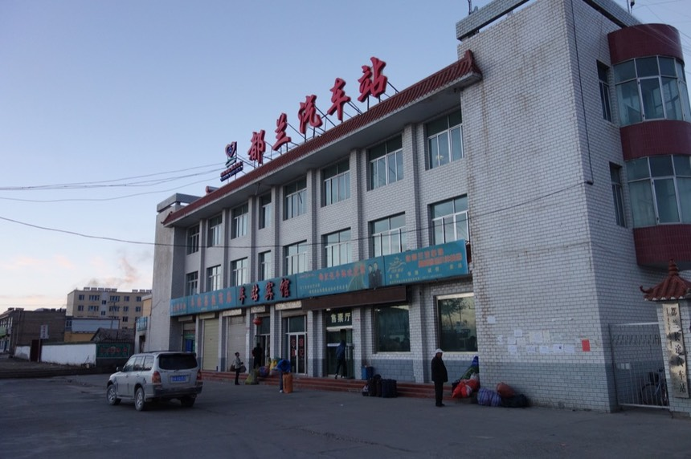
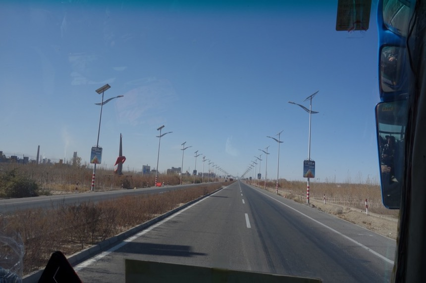
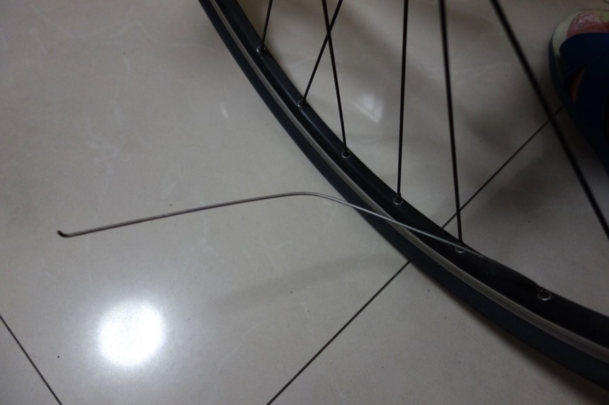
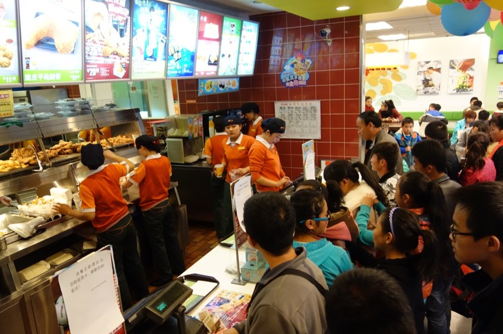

10/27 Day 7 格爾木
大概是因為天氣冷吧，半夜不停的爬起來尿尿，幸好廁所在室內，而且走廊上又有防風玻璃，但夜裡還是好冷好冷。
除此之外，蓋上兩條棉被後（沒有電熱毯）睡的還不錯。
而且一如估計，沒有其他人會因為房價太高的困擾，來跟我擠這個房間了，三人房我一人獨享。
把因為曬在外面而結凍的衣服也蓋上棉被，試圖吸乾水份，這些都是我騎車唯一的衣服和褲子。
萬一明早還不會乾，我要麻就穿濕的衣服騎車，要麻就要燒熱水，然後把電熱爐當成熨斗來燙衣服。而這兩個選項我都不想要發生。
已經預先得知明天的發車時間，想要提早30分鐘去，看能不能搶得一個好位置，也幫小喵號確保載運的空間。
鬧鐘調07：20 但是六點半早早就起床，絕對不能因為賴床而錯過車班，衣服幾乎已經乾了，穿上還是會冰的抖一下。
七點四十就到汽車站等著搭八點二十的車，一如計劃，非常好～

正常的搭車流程是要走進巴士站，驗票，行李過Ｘ光機，上車。但我從巴士進出的那個出入口（有閘門會上鎖）很自然的騎進去。

戴白帽子就是清真，基本上就是不吃豬肉，不喝酒（都是從餐廳內學到的），但在細節我也不知道了。大多都是維吾爾人？
在一排停著的巴士中找到唯一一輛往格爾木的，司機很巧是昨天那位跟我說明天一早才有車的”師傅“。
“師傅”是最近比較流行的名詞？稱呼有技藝的人為師傅我還可以理解，但連稱呼不認識的人用的開場白也是“師傅，你是做什麼的？”
師傅對我說“怎麼～你昨天沒走成呀？”是呀，決定住下一晚上，今天早上再走。
《早到的好處》
@搶到了第一排，在司機隔壁的的絕佳座位。（用裝著重行李的塑膠袋占著位置，水壺也拿起來了，上次搭車連水壺都被震掉）
@在後車廂還沒被塞滿之前就給小喵號先卡了一個位置。（一開始是這樣，後來還是被行李給淹沒了～）
這就是貌似放不下單車，但實際上用微妙的角度橫躺，卻能剛好放得下的後車廂。
有點擔心349公里的顛簸 在容易碰撞的部位用襪子和瓜皮帽+內褲做防震
司機說“今天沒啥人，裝不滿的”，我信以為真。
結果越接近發車時間人越多，帶上的行李數量也越讓人傻眼。
一群人打開窗戶，把大包大包不知道什麼的東西往車尾塞成一座小山，根本就用行李就占去了1/3車的空間。
被他們發現後車廂還有空間，結果就是也塞的滿滿滿～連小喵號都被掩埋了

想到一部舊的搞笑電影，叫做“豬頭，我的車咧”，若不是我親眼看著小喵號被掩埋的過程，直接看到結果的話，就會有相同的問句。
另外，這些人怎麼看都不像有買票的樣子，而且佔去那麼多的空間只為了放海量的行李，司機也都沒有阻止或是抱怨（還有幫忙指揮）
附帶一提，司機跟我收了50元的單車運費，還說這是普遍的收費方式，說夏天的時候，載運單車的人多得很。（我自己開價20元結果被打槍）
過程是這樣的
“你的車票買了沒？”司機問到。
“買了”我想說又是，錢直接給我就好了的老伎倆，但是昨天就已經先買了票，所以我沒辦法直接給你錢。
“那你的車呢？有買貨物託運費嗎？”司機追問。
“啊？有這種東西？買票的時候對方沒有跟我說呀”新招～新招！
“肯定是你沒有提到你有一輛自行車，這樣吧，錢直接給我行了。“結果目的還是一樣，只是為了錢直接進自己口袋...
感覺雖然大陸人隨著經濟成長，越來越有錢，但品德並沒有隨之成長。
我真的以為先買了票，就不用像昨天那樣，被司機收了比票價還貴的車資，只能說想法太天真。人的票價67元，單車又收了50元，合不合理就各位自行判斷了。
開出汽車站後，又跳上了好幾個乘客，直接坐在司機旁的凸起物上。（因為座位已經滿了）
這光頭擋住了我拍照的風景，還好他只搭了60幾公里就下車。
讓開！光頭！昨天沒住到的西部賓館，我還有點絕望的想說今天搭車都要看著風景配上光頭，其實並沒有什麼特別的風景。
剛離開都蘭還稍微算是有點熱鬧，路邊會種樹，因為前不遠有個城市，但再往前走，就是荒涼的戈壁灘。讓開！光頭！
我深深覺得這輛滿載的巴士，按規矩買票的不超過5個人，而我就是其中之一。
其他不是超高技巧逃票，就是錢直接進了司機口袋了。
這位是司機，看起來文質彬彬，雖然被收了50元的運費，但我並不討厭他，他有試圖嚇阻當地人硬把行李塞進後車廂，保護了小喵號。
旁邊就是剛才光頭做的凸起物，他剛下車沒多久，現在看出去的風景好多了。
發車前問了司機什麼時候會到？
答案是下午一點半～兩點左右，行車時間約6個小時，比我預期的還要久一點，但也好，就算早早到了格爾木我也沒事做。
由於滿載人員和行李，能否在承諾的時間到都要打上問號，
就好比司機說今天搭車的人不多一樣，結果看看現在車上有多少人 = =
當我覺得自己乖乖買票好像傻瓜一樣時，我才發現那些不按照規矩買票的。
是因為車票根本沒有賣他們要去的目的地，通常是半路的一個小鎮，或是某個工地，或是偏離大馬路十公里左右的一個村莊。
而直接付錢給司機並不會比買票的公訂價便宜，價錢都是司機自己說了算，
也不知道計算的依據是人數、行李量、還是行車距離或是友情程度，我看到搭很遠很遠，但是司機只跟他收20元的。
中午十二點到達諾木洪（220公里），偏離109國道的一個鄉鎮。
那群帶著大量行李的人就是在此下車，行李又一件一件地從玻璃窗推出來。整個車子瞬間變得好空蕩（剩下半滿）
雖然只是短暫停留，但這個地方比我想像的漂亮，當初規劃路線時，因為這邊偏離主要道路，所以沒有想過要來。
沒有利用這個時間去尿尿實在失策，得再忍忍了，不知道下一站休息是什麼地方？
利用經過的地方和開車的時間計算了一下，平均時速約60公里，的確差不多下午兩點會到格爾木。
在路上會車，就這麼停在路中間交流起來的司機朋友～真是溫馨呀（？）反正路上車流沒有那麼多，擋住整條馬路也是ok的。
真是慶幸昨天自己沒有搭到宗加，只是個鼻屎大的地方，連汽車站都沒有。
昨天若冒然搭到這，隔天還是得站在路邊，試圖攔下現在搭的這輛巴士，那意義究竟何在？
下午一點（已經憋尿好久），在一個交通檢查站停車休息，為什麼是這呢？司機有特別認識這邊的誰想要打招呼嗎？
管它的，趕緊下去尿尿要緊，離格爾木只剩76公里了。
旁邊有一個廁所，但尿尿的人數很多，所以大家還是各自找了一個荒野處，就這麼方便起來。
依然，這段路雖然我不能親自騎單車，但怎麼樣也想用眼睛目睹它的風采，所以這6個小時都很專心地看著景色。
但這段路實在太單調太枯燥了，戈壁灘就是戈壁灘，在新疆時已經領教過一段，此時一直盯著相同不變的景致，整個人彷彿被催眠了一樣。

終於，算是進入格爾木的範圍，但還沒到熱鬧的地方，在往前還是荒涼，然後會慢慢出現一些工廠。
下午兩點進入格爾木，光在外圍的工業區就開了好久，又是一個大城市，整個青海僅次於西寧的大城市。
它比較厲害的地方是，整個是全新的，並沒有太悠久的歷史，所以城市看起來挺漂亮。
加上青藏鐵路的加持，已經可以稱為青藏公路起點的這個名號，都讓格爾木日益壯大。

進入市區沒多久，巴士就右轉離開了109國道，正準備在腦海中把路記下來，以便可以騎回國道上。
剛好有人要下車，我就趕緊跟著下，臨走前還跟司機（他下來幫我開後車廂）握了手。
我也說不上為什麼，也許因為他嚇阻當地人不要把行李硬塞到後車廂壓壞我的車。
也許因為他平安而穩健的開了將近350公里路送我到格爾木，省下我三天在鳥不拉屎的戈壁灘中騎行。
把東西重新放回背包內，把小喵號從拖運模式恢復騎乘模式，休養了兩天沒騎車，身體情況大大之好！
騎上單車的自在舒適感令人雀躍！感覺自己可以一口騎上拉薩！
沿著黃河路貫穿格爾木市，但這條國道所經過的地方，並不是格爾木的市中心，熱鬧的地方在右手邊的市區。
走到路底看見網友推薦的海馬賓館，最便宜的房間要68元，不能洗澡，而且沒有wifi了（現在都會問一下有沒有網路）
時間還不到下午三點，所以沒有立刻投宿，這個地點的好處大概就是他在格爾木的邊邊，一離開大門大概就算離開格爾木了。
有兩件事情想做
1.去銀行多領一點旅行生活費（目前身上帶的預算是以一天50加上青藏鐵路的票價）
2.找格爾木一間小有名氣的騎行者驛站，想要去參觀一下，問點騎車情報，或是更好的話就把後輪斷掉的鋼絲給換上新的。
看到第一間銀行“中國農業銀行”很開心就準備去ATM領錢
結果機器說”所需服務已取消”
打電話回台灣開通國際提款功能後，卻依然無法領錢，讓我有點肚爛。
我並不是沒有用過國際領錢的功能，所以應該不是台灣的問題，也許是本地銀行的問題。
果然換一間中國建設銀行，就一次搞定了！
注意！不是每一個貼有國際提款功能的機器都能領錢，萬一失敗了，就換一間試試。不要浪費時間跟機器過不去。
領了額外的生活費之後，感覺接下來的日子就不會那麼苦了。
找到在中山路上的騎行者驛站（41-7號）
招牌掛的是美利達（和網路上的圖片不一樣）我騎過去問老闆“捷安特的能修嗎？”
還記得那根剛出發就壞掉的鋼絲嗎？

老闆拿著尺量長度，然後用拆齒輪組的工具卸下後輪，專業的換起了鋼絲來。
我趁機檢查後輪內胎是否有刺破洞，貌似是我多心了？

雖然我找不到破洞，但每天睡醒，後輪都會軟軟的，每次開始一天的旅行之前，都要先給後輪打氣。
邊施工邊聊天，聽到我要去拉薩，又聽到我從台灣來。
老闆就很凝重的跟我說“上不去”，出格爾木30公里就有一個檢查站。
“會看身分證的，在那邊你就會被擋下來”
但也不是沒有辦法，不要那麼誠實說自己從台灣來，要騎去拉薩就好。
就簡單說自己從格爾木要騎上去納赤台玩，也許就沒事，只能靠老天保佑了。
修好車問一下多少錢，不好意思給太少。
老闆說10塊就行了，我拿出30拜託老闆收下。
謝謝你“姜師傅”（網路單車論壇上似乎有點名氣的人-孟海，他的爸爸），無比感激。
這間車店過沒多久要搬家了，確切位置我也不清楚，如果各位想來拜訪，得先知道新的地址以免撲空。
生活費領了，小喵號也修好了，非常開心且悠哉的在市區晃。
又給我看到德克士炸雞的招牌，已經錯過太多次了，加上才說要對自己好一點。
所以就進去展開我人生中的第一份中國炸雞。
我只能說那物價之高，加上那人潮之多，2007〉2013 中國真的成長了好多～

單點一塊炸雞是9元，約台幣45元，你就知道兩岸的物價已經沒有什麼差距。
但台灣這幾年的原地踏步，所呈現的經濟成長差異，實在殘酷到令人嘆息。
坐在店門口的長椅上，跟著小喵號一起品嘗炸雞餐（連外帶的塑膠袋也要錢了～）
薯條比較接近21世紀的口感。
所謂的辣味炸雞，其實只是一般炸雞幫你“撒上辣椒粉”，但貴0.5元（這什麼巫術！）
炸雞是溫冷的，至少稱不上熱。很大一塊是唯一可取的特色，味道很普通。
三峽黃昏市場的炸雞都好吃的多（一大盤才100元）
汽水難喝的嚇人，不知道什麼奇怪的牌子？（後來發現是百事可樂，但沒那麼難喝才對呀？）
我給德克士 4/10，不是很推薦，如果為了嘗鮮吃那麼一次，我想也就夠了。
吃飽後繼續找旅館，打算一路騎回海馬賓館，一路上看到旅館就問價錢，但如果發現低於68的就住下。
找了幾間，實在心灰意冷，80、100而且都是最差的普通間（沒廁所、浴室）
究竟如何能開出這樣的價位？是怎麼樣的自信覺得這樣的房價是合理的？
雖然才決定不要虐待自己，但這樣價性比的房間我真心住不下去。真的不只是錢的問題而已。
繞回海馬賓館，過門不入，左轉離開格爾木準備在郊區找便宜住宿。
一路上只見數不清的各式汽車修理廠，原來這邊又稱為汽修城（公車站牌這樣寫）
一路騎到看見高速公路收費站才回頭，依照經驗，出了收費站就是荒野了。
想不到郊區的住宿如此難找，回頭騎到一半總算發現住宿的牌子。
內院全是修理中的車輛和工人
問了老闆價錢，是令人感到懷念的20元。
好開心～好開心 即使單車要搬上三樓我也能接受（要分兩趟搬運，重物和小喵號）
老闆開了房門後走了下去，沒一分鐘又走了上來，指著電視說房間新裝了第四台。
“所以呢？”，所以房價要漲10元。
真他媽的 我又不看電視！但是想想算了，30也還是便宜，就給你漲價吧。

牆上的海報都是台灣的女歌星（好幾年前的）看著還是青澀時期的藝人，就好比現在的物價一樣，都是已經回不去的美好年代。
天色約五點多，空氣中還有殘留的熱度，陽光也還西曬著，把握時間去洗手台擦了冷（冰）水澡！（首度不是用熱水擦澡）
而且不是分段擦澡法，是一口氣脫到剩四角褲擦澡法，真是冷呀，入夜後絕對不能這樣做！
昨天因為覺得自己沒騎車所以就不擦澡，只洗臉刷牙，今天要把兩天的份一起擦完。
順便洗了很久（？）沒洗的襪子（我真心不記得自己有洗過襪子）
萬一曬不乾，我又得破壞另一雙襪子當腳踝襪了。
今天就這樣結束了，真的放了一個週末的假。
星期六，茶卡搭巴士到都蘭，128公里，兩個小時。
星期日，都蘭搭巴士到格爾木，354公里，六個小時。
身體狀況絕佳～小喵號的後輪鋼絲也補上了。
明天星期一開工重新踩上踏板騎車，能否順利穿越30公里外的檢查站往西藏騎呢？
帶著問號入眠，祈禱眾神保佑
今日花費
50 小喵號運費
30 姜師傅單車店換後輪鋼絲 （開價10）
31 德克士炸雞 雞腿套餐
9.5 單點一塊辣味炸雞
30 住宿 汽修城（開價20 又漲10）
----
150.5，扣掉運費和修車費，食+宿是 70.5元
今日騎乘
騎乘時間 01：24：23
距離 17.1km
平均速度 12.8km
路線圖 (Google Map 連結)